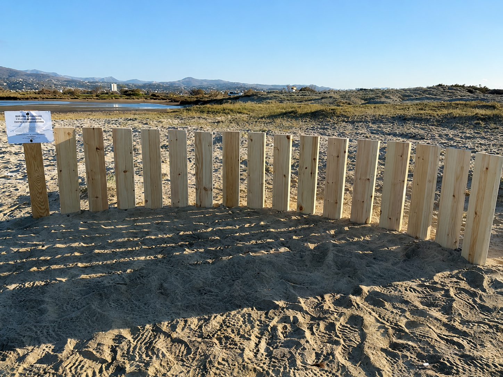
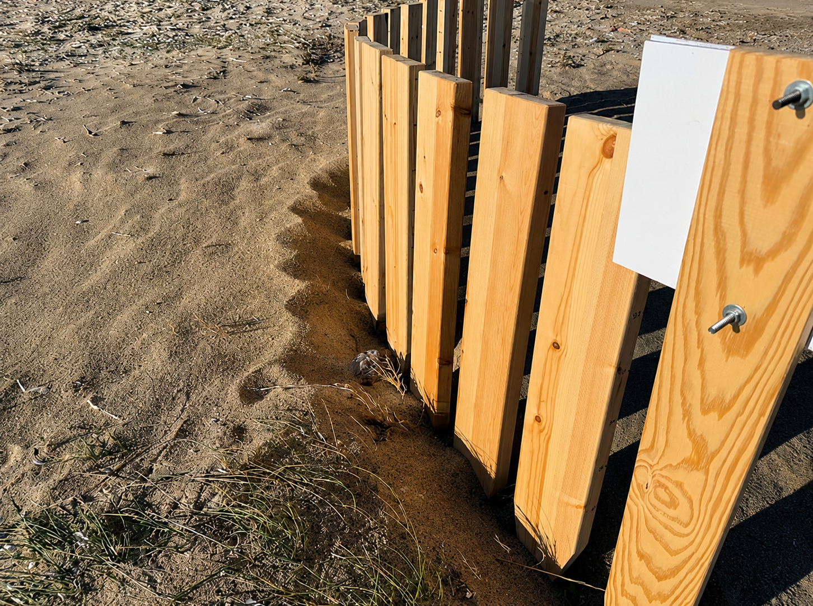
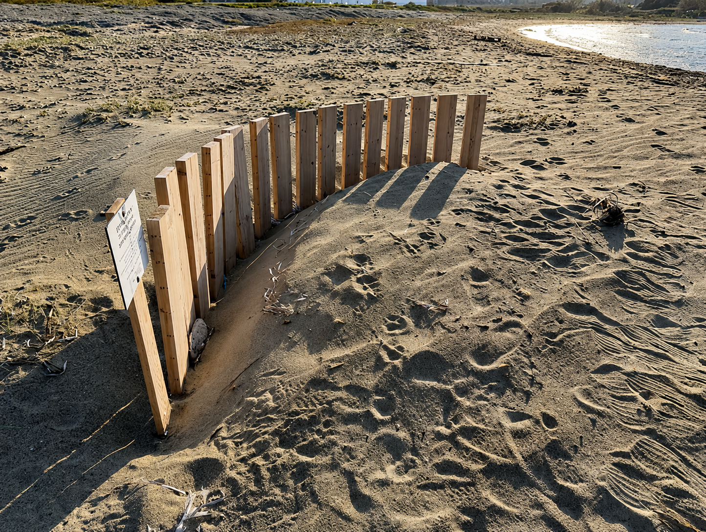

University of Athens · Coastal Geomorphology
Artificially Triggered Nature-based Sand Dunes
Agios Georgios, Naxos · Since 12 December 2025
Significance
Coastal and ecological value
Coastal dunes are the first natural barrier against erosion and inundation by the sea, even under extreme events. In this way they protect the adjacent environment, natural and built alike — for example the lagoons (the Alyki of Naxos) — from the sea's effect on their salinity, keeping their biodiversity safe. Functioning, moreover, as a sediment reservoir, the dunes feed the beach with material in periods of erosion, while shaping the beautiful ripples in the sand that reveal the natural beauty of the coastal ecosystem.
Intervention
Porous timber sand fence
A 5-metre porous timber fence, set perpendicular to the prevailing winds, reduces wind velocity and traps wind-blown sediment, initiating the formation of an incipient foredune.
- Length
- 5 m
- Height
- 70 cm · 30 cm embedded
- Porosity
- 50%
- Trapping efficiency
- ≈85%
- Orientation
- NNE · perpendicular to prevailing winds
Accumulation is monitored by GNSS-RTK surveys producing Digital Elevation Models, 3D photogrammetry of accumulated volume, post measurements of sand level and scouring, and stratigraphic and granulometric analysis along seven fixed cross-sections.
Measured outcomes
Results after 91 days
Within 91 days a new dune up to 1.12 m high formed on the southern side and coalesced with the pre-existing back-dune, reinforcing the continuity of the dune system. The structure withstood intense storms. The dune was built entirely by aeolian transport, without imported sediment.
Evolution · field record
The dune, day by day



12 December 2025
The fence is installed on level sand.
On site
The dune is a living experiment
The dune is a continuously monitored field experiment installed in December 2025; observation and measurement are ongoing.
- Location
- Agios Georgios beach, Naxos
- Site
- Airport Lagoon, western Naxos
- Conducted by
- National and Kapodistrian University of Athens — Department of Geology and Geoenvironment
- Scientific lead
- Dr Niki Evelpidou
- Installed
- 12 December 2025
Visitors should keep to marked paths; the natural dunes and vegetation are not touched, and sampling is limited to sand accumulated on the structure.
Artificially Triggered Nature-based Sand Dunes · National & Kapodistrian University of Athens